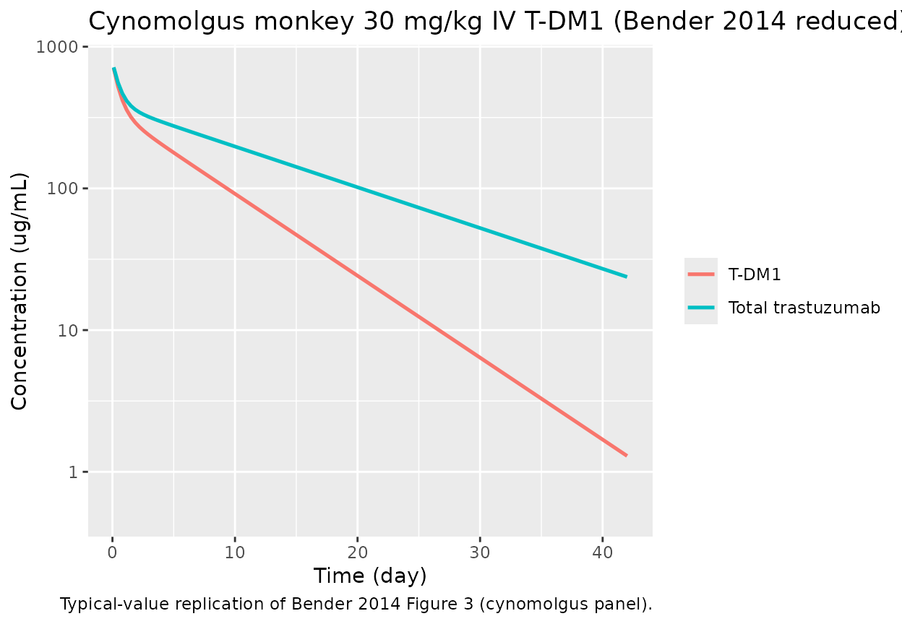
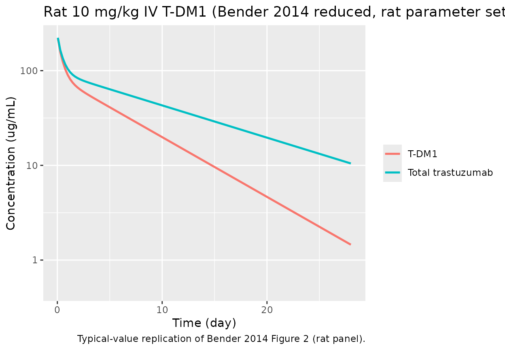

Trastuzumab emtansine (T-DM1) preclinical reduced PK model (Bender 2014)
Source:vignettes/articles/Bender_2014_trastuzumabEmtansine_reduced.Rmd
Bender_2014_trastuzumabEmtansine_reduced.Rmd
library(nlmixr2lib)
library(rxode2)
#> rxode2 5.0.2 using 2 threads (see ?getRxThreads)
#> no cache: create with `rxCreateCache()`
library(dplyr)
#>
#> Attaching package: 'dplyr'
#> The following objects are masked from 'package:stats':
#>
#> filter, lag
#> The following objects are masked from 'package:base':
#>
#> intersect, setdiff, setequal, union
library(ggplot2)
library(tidyr)Overview
Bender et al. (2014) developed two preclinical PK models for trastuzumab emtansine (T-DM1), an antibody-drug conjugate (ADC) of trastuzumab and the maytansine derivative DM1 linked via SMCC. The dataset combined rat (n = 34) and cynomolgus monkey (n = 18) PK, plus in vitro plasma stability.
This vignette exercises the reduced model (Bender
2014 Table III), which collapses the conjugated species into a single
lumped “T-DM1” compartment and tracks naked trastuzumab (DAR0)
separately. T-DM1 deconjugates to DAR0 via a single first-order
deconjugation clearance CL_DEC. Both forms share the same
central / two peripheral volumes and distributional clearances.
See the companion
Bender_2014_trastuzumabEmtansine_mechanistic model /
vignette for the full DAR0–DAR7 catenary chain (Bender 2014 Table
II).
Scope and species
Both rat and cynomolgus monkey parameter sets are documented in the
model’s population$species_parameters metadata. The
ini() block is populated with the cynomolgus estimates
(Table III, cyno column). The rat alternates are noted in the in-file
comments and can be applied by updating the fixed effects (converting
published mL/day values to L/day via /1000).
mod <- rxode2::rxode(readModelDb("Bender_2014_trastuzumabEmtansine_reduced"))
#> ℹ parameter labels from comments will be replaced by 'label()'
str(mod$meta$population$species_parameters, max.level = 2)
#> List of 2
#> $ cynomolgus:List of 9
#> ..$ source : chr "Bender 2014 Table III, cynomolgus columns"
#> ..$ CL_TT : chr "19.9 mL/day (IIV CV 19.8%)"
#> ..$ V1 : chr "154 mL (IIV CV 7.65%)"
#> ..$ CLd2 : chr "56.8 mL/day (no IIV)"
#> ..$ V2 : chr "50.0 mL (no IIV)"
#> ..$ CLd3 : chr "60.4 mL/day (no IIV)"
#> ..$ V3 : chr "84.7 mL (IIV CV 27.3%)"
#> ..$ CL_DEC : chr "22.0 mL/day (IIV CV 11.9%)"
#> ..$ res_err: chr "9.64% proportional"
#> $ rat :List of 10
#> ..$ source : chr "Bender 2014 Table III, rat columns"
#> ..$ CL_TT : chr "2.37 mL/day (IIV CV 24.6%)"
#> ..$ V1 : chr "10.7 mL (IIV CV 19.8%)"
#> ..$ CLd2 : chr "59.7 mL/day (no IIV)"
#> ..$ V2 : chr "2.52 mL (IIV CV 68.0%)"
#> ..$ CLd3 : chr "13.9 mL/day (no IIV)"
#> ..$ V3 : chr "15.5 mL (IIV CV 16.5%)"
#> ..$ CL_DEC : chr "2.24 mL/day (IIV CV 15.3%)"
#> ..$ res_err: chr "10.9% proportional"
#> ..$ notes : chr "Rat fit adds IIV on V2; to switch from the cynomolgus default to the rat parameter set, call ini() on the resul"| __truncated__Source trace
Every ini() value in
inst/modeldb/specificDrugs/Bender_2014_trastuzumabEmtansine_reduced.R
comes from Bender 2014 (doi:10.1208/s12248-014-9618-3):
| Parameter | Cynomolgus value | Rat value | Source |
|---|---|---|---|
CL_TT |
19.9 mL/day (CV 19.8%) | 2.37 mL/day (CV 24.6%) | Table III |
V1 |
154 mL (CV 7.65%) | 10.7 mL (CV 19.8%) | Table III |
CLd2 |
56.8 mL/day | 59.7 mL/day | Table III |
V2 |
50.0 mL | 2.52 mL (CV 68.0%) | Table III |
CLd3 |
60.4 mL/day | 13.9 mL/day | Table III |
V3 |
84.7 mL (CV 27.3%) | 15.5 mL (CV 16.5%) | Table III |
CL_DEC |
22.0 mL/day (CV 11.9%) | 2.24 mL/day (CV 15.3%) | Table III |
| Residual | 9.64% proportional | 10.9% proportional | Table III |
Values in the ini() block are expressed in L and L/day
(mL and mL/day divided by 1000) so that dose in mg and volume in L give
concentrations in mg/L = ug/mL directly.
Cynomolgus 30 mg/kg IV single-dose replication
Bender 2014 Figure 3 (bottom panel) displays total trastuzumab (TT) and T-DM1 concentration–time profiles after a single 30 mg/kg IV T-DM1 DAR 3.1 dose in four cynomolgus monkeys. Reference body weight for cynomolgus monkeys is ~4 kg, giving a nominal 120 mg absolute dose.
dose_mg <- 120 # 30 mg/kg * 4 kg body weight
events <- rxode2::et(amt = dose_mg, cmt = "central", time = 0) |>
rxode2::et(seq(0.1, 42, length.out = 120), cmt = "Cc")
sim <- rxode2::rxSolve(mod |> rxode2::zeroRe(), events = events)
#> ℹ omega/sigma items treated as zero: 'etalcl', 'etalvc', 'etalvp2', 'etalcldec'
sim_long <- as.data.frame(sim) |>
pivot_longer(c(Cc, Ctt), names_to = "analyte", values_to = "conc") |>
mutate(analyte = recode(analyte,
Cc = "T-DM1",
Ctt = "Total trastuzumab"))
ggplot(sim_long, aes(time, conc, colour = analyte)) +
geom_line(size = 0.9) +
scale_y_log10(limits = c(0.5, NA)) +
labs(x = "Time (day)", y = "Concentration (ug/mL)",
colour = NULL,
title = "Cynomolgus monkey 30 mg/kg IV T-DM1 (Bender 2014 reduced)",
caption = "Typical-value replication of Bender 2014 Figure 3 (cynomolgus panel).")
#> Warning: Using `size` aesthetic for lines was deprecated in ggplot2 3.4.0.
#> ℹ Please use `linewidth` instead.
#> This warning is displayed once per session.
#> Call `lifecycle::last_lifecycle_warnings()` to see where this warning was
#> generated.
Rat 10 mg/kg IV single-dose replication
Switching the ini() fixed effects to the Table III rat estimates is a
two-step update: convert published mL and mL/day to L and L/day (divide
by 1000), then pass to ini() on the model object. IIV on
V2 is reported in rat but the cyno default ini has no
etalvp term, so we illustrate the typical-value simulation
only.
mod_rat <- mod |>
ini(
lcl = log(0.00237),
lvc = log(0.0107),
lqd2 = log(0.0597),
lvp = log(0.00252),
lqd3 = log(0.0139),
lvp2 = log(0.0155),
lcldec = log(0.00224),
CcpropSd = 0.109,
CttpropSd = 0.109
)
#> ℹ change initial estimate of `lcl` to `-6.0448653238351`
#> ℹ change initial estimate of `lvc` to `-4.53751153751428`
#> ℹ change initial estimate of `lqd2` to `-2.81842325858358`
#> ℹ change initial estimate of `lvp` to `-5.98349637745881`
#> ℹ change initial estimate of `lqd3` to `-4.27586643884549`
#> ℹ change initial estimate of `lvp2` to `-4.16691525505694`
#> ℹ change initial estimate of `lcldec` to `-6.10127941311519`
#> ℹ change initial estimate of `CcpropSd` to `0.109`
#> ℹ change initial estimate of `CttpropSd` to `0.109`
rat_dose <- 3 # 10 mg/kg * 0.3 kg typical rat BW
events_rat <- rxode2::et(amt = rat_dose, cmt = "central", time = 0) |>
rxode2::et(seq(0.05, 28, length.out = 120), cmt = "Cc")
sim_rat <- rxode2::rxSolve(mod_rat |> rxode2::zeroRe(), events = events_rat)
#> ℹ omega/sigma items treated as zero: 'etalcl', 'etalvc', 'etalvp2', 'etalcldec'
sim_rat_long <- as.data.frame(sim_rat) |>
pivot_longer(c(Cc, Ctt), names_to = "analyte", values_to = "conc") |>
mutate(analyte = recode(analyte,
Cc = "T-DM1",
Ctt = "Total trastuzumab"))
ggplot(sim_rat_long, aes(time, conc, colour = analyte)) +
geom_line(size = 0.9) +
scale_y_log10(limits = c(0.5, NA)) +
labs(x = "Time (day)", y = "Concentration (ug/mL)",
colour = NULL,
title = "Rat 10 mg/kg IV T-DM1 (Bender 2014 reduced, rat parameter set)",
caption = "Typical-value replication of Bender 2014 Figure 2 (rat panel).")
Derived terminal half-lives
Bender 2014 Table III reports derived terminal half-lives for total trastuzumab and T-DM1 in each species. Computing them from the simulated log-linear terminal phase provides an end-to-end sanity check against the published values.
late <- as.data.frame(sim) |>
filter(time >= 25)
t12 <- function(t, c) log(2) / -coef(lm(log(c) ~ t))[2]
data.frame(
analyte = c("T-DM1", "Total trastuzumab"),
simulated_t12_days = c(t12(late$time, late$Cc),
t12(late$time, late$Ctt)),
paper_t12_days = c(5.21, 10.5)
)
#> analyte simulated_t12_days paper_t12_days
#> 1 T-DM1 5.207294 5.21
#> 2 Total trastuzumab 10.465739 10.50Assumptions and deviations
- Cynomolgus body weight fixed at 4 kg and rat body weight fixed at 0.3 kg to convert paper mg/kg doses to absolute mg inputs; the model itself does not scale by body weight, matching the paper’s absolute-volume parameterization.
- Residual error treated as pure proportional in linear space; Bender 2014 reports residual error as additive on log-scale, which is equivalent to proportional in nlmixr2’s linear space.
- BSV zeroed out with
rxode2::zeroRe()for typical-value replication; Table III IIV estimates remain available inini()for stochastic simulation.